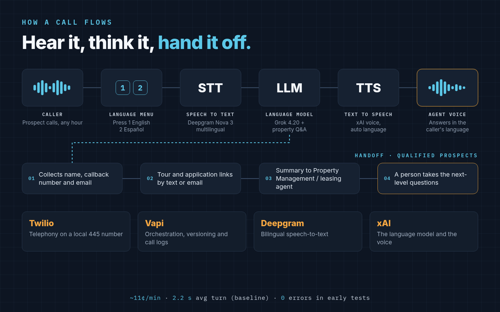
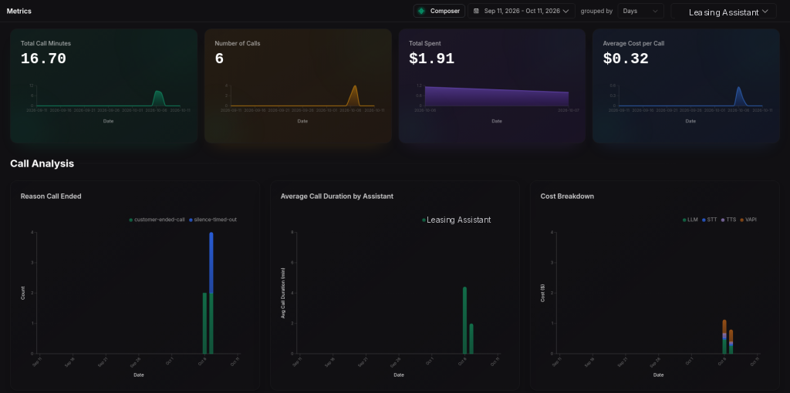
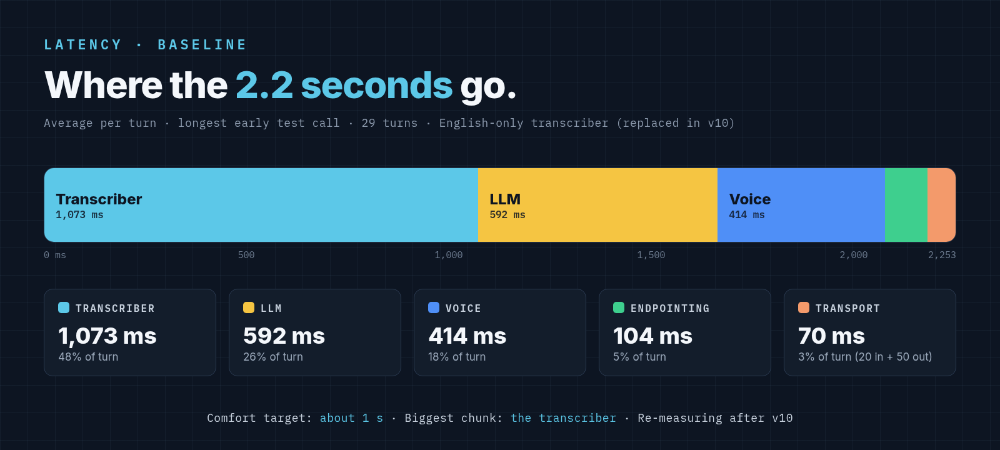
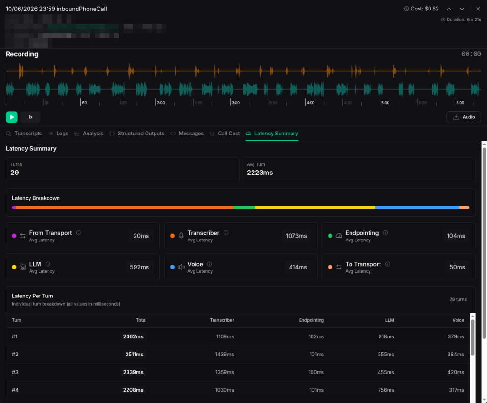
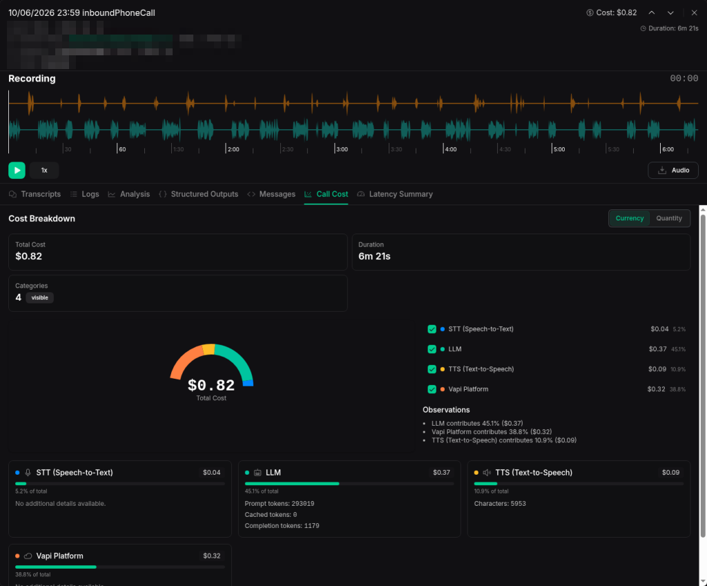
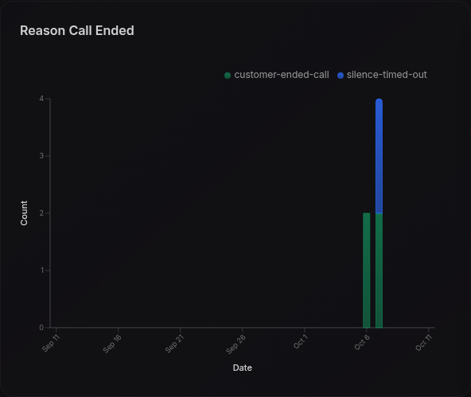

If you manage rentals, you know the calls. "How much is the two-bedroom?" "What's the square footage?" "Are utilities included?" "Do you take cats?" "What credit score do I need?" "Is there parking?"
Every prospect deserves a clear answer. But a leasing agent can spend hours a week answering the same ten of them. The calls that come in at 9:40 p.m. often go to voicemail and never call back. And not every agent speaks Spanish, so some of your most interested prospects never get a real conversation.
I've spent over 25 years in SRE, DevOps and systems administration, and about 15 years as a residential real estate agent, with around 75 buy and sell transactions. Today I manage multifamily rentals full time. So I did what an operator with an infrastructure background does: I built the tool I needed, and I ran it like a production service.
What I built
It's a bilingual (English and Spanish) AI leasing voice agent that answers prospect calls for a 16-unit building in Philadelphia I manage: eight one-bedrooms and eight two-bedrooms.
It answers the basics 24/7:
- Rent and utilities
- Availability
- Pets and parking
- Qualification requirements (credit and income)
- Heat
- The application process and self-guided tour links
- Maintenance and rent portal info, plus emergency contacts
How a call flows


Callers hear: "For English, press one. Para español, oprima dos." They can also just say "español," or start speaking Spanish, and the agent switches.
Next comes a short building overview, which the caller can interrupt at any time. Then it asks, "Is there a specific area you'd like to know more about?"
If the caller is interested, the agent collects and confirms their name, email (spelled back letter by letter), callback number and best time to reach them. It never reads a URL aloud. It emails the showing and application links instead.
Finally, qualified prospects are handed to a human leasing agent with a structured summary: name, contact info, unit interest, move-in timing, the questions they asked and their language preference.
The two benefits that matter most
1. It gives agents their time back. The agent pre-informs and pre-qualifies. By the time a person calls back, the prospect already knows the rent, the pet policy and the income requirement. The human conversation starts at the next level: "When would you like to see it?" not "How much is it?"
An illustrative example, not a measurement: if an agent fields 20 basic calls a week at 8 minutes each, that's about 2.7 hours a week spent repeating the same answers.
2. It reaches people your team can't. Not every agent is bilingual. Now every Spanish-speaking caller gets the same complete, patient answers as an English-speaking caller, at any hour. And the same design can extend to more languages.
Built as a template, not a one-off
The agent refers to "Property Management" rather than a person's name, so nothing is hard-wired to one building or one employee. A fill-in questionnaire (about 20 minutes, mostly checkboxes) captures a new property's details, and the same agent is cloned for other multifamily properties.
A California property is next, which brings a compliance lesson: California requires all-party consent for call recording, so that version needs a recording notice up front. Templates have to carry legal differences, not just rents.
Two rules apply everywhere:
- Fair housing: every caller gets the same answers. No steering.
- Consent: outbound calls and texts only with consent, with TCPA compliance and A2P 10DLC registration for texting.
What it costs
Before launch, I budgeted from published pricing (checked October 8, 2026):
| Component | Budgeted per minute |
|---|---|
| Vapi platform | ~$0.05 |
| Grok voice (TTS) | ~$0.08 |
| Deepgram multilingual STT | ~$0.0095 |
| Twilio inbound | ~$0.0085 |
| LLM tokens | varies |
| All-in | ~$0.15 budgeted; ~$0.11 measured |
I budgeted $0.15 a minute; real early calls came in around $0.11 a minute. My first 6 test calls (October 6–7, early versions v4–v9, before the bilingual v10) ran 16.70 minutes for $1.91 total: $0.32 per call on average, with an average call of about 2 minutes 47 seconds. These are early test calls, a small sample, not production traffic.
At budget, 300 minutes a month is about $45, plus about $1.15 a month for the phone number. Going bilingual adds roughly 1.5 to 3 cents per minute.
The stack, and the lessons
- Vapi for voice agent orchestration
- xAI Grok as the LLM (Grok 4.20 non-reasoning, chosen for low latency) and Grok text-to-speech for the voice
- Deepgram Nova 3 multilingual for speech-to-text
- Twilio for the phone number, with keypad (DTMF) input
- Structured outputs for the lead summary
The biggest lesson: bilingual is a speech-to-text decision, not just a prompt decision. The original transcriber was English-only. I could tell the model to speak Spanish all day, but if the transcriber can't hear Spanish, the agent can't understand the caller. Switching to a multilingual STT model was the real fix.
The second lesson: treat prompts like code. The system prompt is about 50,000 characters, with explicit hard rules. Every change ships as a named version (I'm on v10), and I keep a saved rollback config. Before publishing, I run test calls as a regression suite: press 1, press 2, say "español," stay silent, start in Spanish. If any one breaks, the version doesn't ship.
Observability: the SRE part
Vapi's call logs give per-call cost and latency breakdowns plus full transcripts. Here's what I watch:
- Cost per call and per minute, with alerts on cost spikes
- Average call duration and how calls ended
- Turn latency: end of the caller's speech to the start of the agent's, broken down by transcriber, LLM and voice
- Interruption (barge-in) rate, fallback and error rates, and language split
- Lead capture rate: calls ending with a valid email and phone number
The next metric I'm adding is containment rate: calls fully answered without a human. I haven't measured it yet.
One practical note: Vapi's free call-log retention is 14 days. If you want history, export your logs.


Latency: my honest baseline
In natural conversation, people typically leave gaps of only a few hundred milliseconds between turns (Stivers et al., PNAS, 2009). Jakob Nielsen's classic usability guidance puts about 1 second as the limit before a delay interrupts a person's flow of thought.
My baseline is slower than that. On the longest early test call (6 minutes 21 seconds, 29 turns), the average turn took 2,223 ms, and individual turns ranged from 1,696 to 2,520 ms. Where the time went, on average:
- Transcriber: 1,073 ms (about 48%)
- LLM: 592 ms
- Voice: 414 ms
- Endpointing: 104 ms
- Transport: 20 ms in, 50 ms out




That's not where I want it, and that's the point of measuring. Every choice spends from the latency budget: prompt size, model choice (non-reasoning for speed), endpointing (too long feels sluggish, too short cuts people off) and voice caching. Set an SLO the way you would for any service, such as "p95 turn latency under X ms," and measure against it after every release.
What the dashboards told me
That same call cost $0.82: LLM $0.37 (45%), Vapi platform $0.32 (39%), TTS $0.09 (11%) and STT $0.04 (5%). It used 293,019 prompt tokens, 0 cached tokens, 1,179 completion tokens and 5,953 TTS characters. Across all 6 calls there were 0 errors (0 in 4,676 log lines on the longest call).


Four findings, and what I changed:
- The transcriber was the biggest latency chunk. That was the English-only xAI transcriber. Version 10 replaced it with Deepgram Nova 3 multilingual, so I'm re-measuring.
- The LLM was 45% of cost because the large system prompt is resent every turn, with 0 cached tokens. Prompt caching or trimming the prompt is my biggest cost lever.
- 2 of 6 calls ended on silence timeouts (the other 4 callers hung up normally). Version 10 added idle "Are you still there?" nudges.
- Transcripts showed the gaps. The agent deferred on "Is there a rooftop?" and repeated an answer word for word when re-asked. Dashboards show you where to look; reading transcripts shows you what to fix.


What's next
- More languages
- After-hours maintenance triage
- CRM integration, so lead summaries land where the leasing team already works
- More properties, starting with California
Want one for your property?
I built this for my own building. Now I'm opening it up to other property managers. You get:
- Your own bilingual (English/Spanish) leasing line, set up from a 20-minute questionnaire
- Answers to prospect questions 24/7, including after hours
- Lead summaries delivered to your inbox: name, contact, unit interest, move-in timing, questions asked and language preference
- The same tested template, customized to your building's rents, policies and links
The offer: the first 10 property managers get it free, with setup and service at no cost for the first 1 month. After that, pricing is $99/month per property.
If you'd like one, comment "DEMO" below or send me a DM. You can also hear it for yourself by calling 445-256-RENT, (445) 256-7368 (press two to try it in Spanish). You can also see what else I'm building at excitere.ai, an AI HomeFix concierge.
The goal was never to replace leasing agents. It's to let them spend their time on the conversations that actually need a person.
Hear it yourself: call 445-256-RENT, (445) 256-7368. Press 2 for Spanish.
Questions, or want one for your property? Connect with me on LinkedIn.